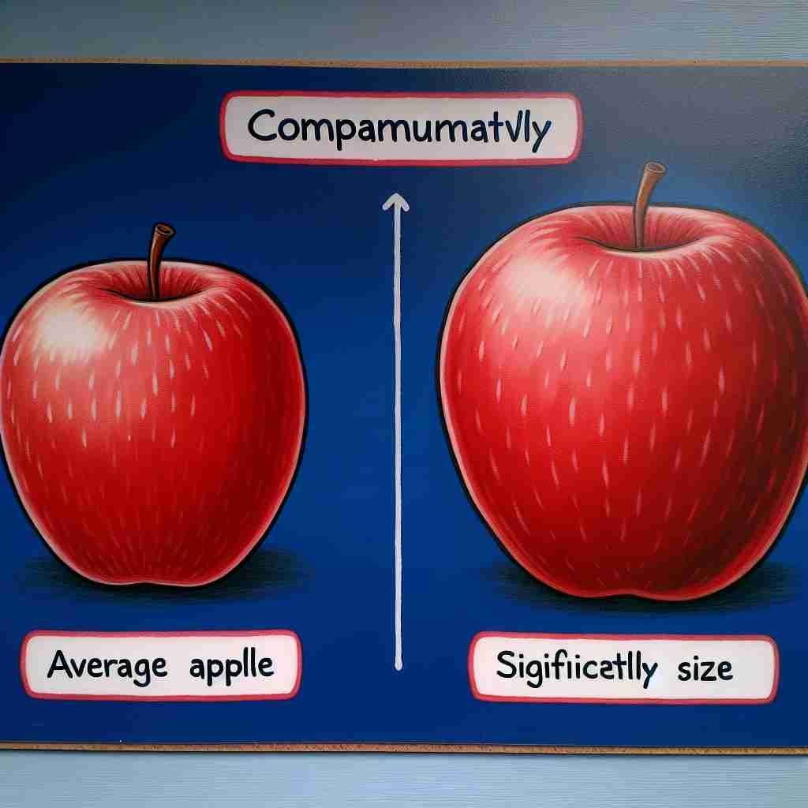

comparatively 💥
🔈 [kəm'pærətɪvlɪ]
🗝️ adv. in a way that involves comparing two or more things
🖼️ 在一个明亮的教室里，老师正在讲解科学实验。她把两种液体分别倒入两个烧杯中，然后说：'注意观察，液体A相较于液体B会有不一样的反应。这样我们就可以 comparatively 分析它们的性质。'
🔍 理解'comparatively'的关键在于把握其核心含义：'比较'。无论是描述相对程度还是表达相对关系，都是通过比较得出的结论。想象一个天平，你在比较两个或多个事物，从而得出相对的判断。这个比较的过程贯穿了'comparatively'的所有用法，帮助你更容易理解和记忆这个词。

💬 The left side of the image is comparatively colorful compared to the dry desert on the right.

💬 He thinks there are comparatively more books to read this month.

💬 The model car is comparatively smaller than the building.

💬 The right apple is comparatively larger than the left apple.
🌳 由基本词 'compare'（比较）加上副词后缀 '-ly' 和修饰词 'comparative'（比较的）, 构成一个副词，表示 '相对地, 比较而言'。
🔗 1. compare: 比较 2. comparative: 比较的 3. comparison: 比较
💡 记忆 'comparatively' 时，可以联想为 'in comparison with something' 的概念，通过比较来理解其相对的含义。这样可以帮助记住它在句子中用来表示对比的功能。
🗝️ adv. to a moderate degree when compared with something else
🖼️ 在一个家具展厅中，一对夫妻正在选择沙发。妻子坐在一个布艺沙发上，感受了一下舒适度后说道：'这个沙发 comparatively 比其他的要更舒适一些。'
💬 The damage to the car was comparatively minor.
❓ 通过比较得出相对程度
🗝️ adv. relatively, in relation to something else
🖼️ 在一个午餐聚会上，朋友们正在讨论他们的职业。一个朋友坦诚地说道：'在我们公司里，我的工作量 comparatively 轻一些，这让我有更多的时间培养爱好。'
💬 This year's crop yield was comparatively good, considering the drought.
❓ 强调相对性而非绝对性